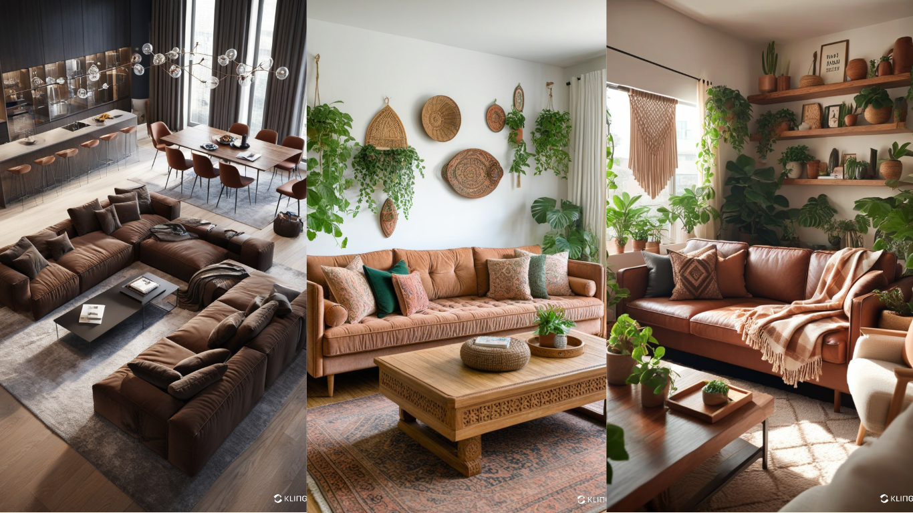
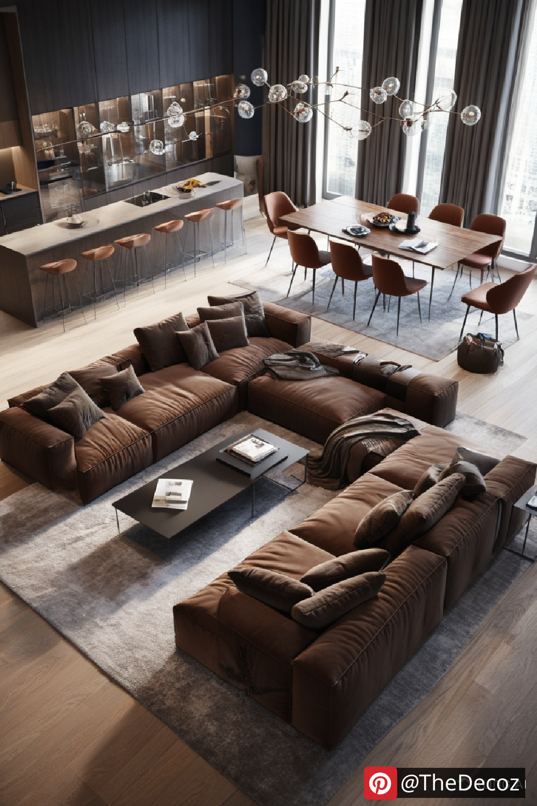

Living Room Decor Brown Couch: Stylish Ideas for a Cozy Ambiance
When it comes to creating a warm and inviting living space, a brown couch can serve as the perfect anchor piece. The timeless appeal of brown furniture blends effortlessly with various interior styles, from classic to modern. Whether you prefer a rustic charm or a contemporary look, incorporating a brown couch into your living room decor can create a cozy ambiance with elegance and style. Here’s how to elevate your living room decor with a brown couch.
1. Choose the Right Color Palette
A brown couch offers versatility when it comes to choosing a color palette. Complement the rich tones with neutral shades such as beige, cream, or gray for a sophisticated look. If you want to add a pop of color, opt for accent pillows or throws in jewel tones like emerald green, navy blue, or mustard yellow.
2. Add Texture with Fabrics and Materials
To enhance the cozy feel of your living room, incorporate different textures. Velvet or faux fur throw blankets, knitted cushions, and linen curtains can add layers of comfort. A jute rug or wooden coffee table will bring natural elements that complement the earthy tones of the brown couch.
3. Incorporate Patterns and Prints
Break up the solid color of your brown couch by adding patterned cushions or a printed area rug. Geometric patterns, florals, or tribal prints can add visual interest without overwhelming the space.
4. Lighting Matters
Proper lighting can highlight the beauty of your brown couch. Use a combination of floor lamps, table lamps, and wall sconces to create a warm atmosphere. Soft, warm-toned bulbs will enhance the inviting ambiance of the room.
5. Wall Art and Decor Accents
Artwork and decorative pieces can personalize your living room. Choose wall art that ties in with your color scheme or opt for metallic accents like brass or copper to add a touch of glamour. Greenery, such as potted plants or hanging planters, will bring life and freshness to the space.
6. Balance the Space with Furniture
Complement your brown couch with furniture pieces that balance the room. A light-colored coffee table, open shelving, or minimalist side tables can prevent the space from feeling too heavy or dark.
7. Seasonal Updates
One of the best aspects of a brown couch is its adaptability to seasonal changes. Swap out cushions, throws, and decorative accents with seasonal colors and textures to keep your living room decor fresh and inviting.
Conclusion
A brown couch can be the cornerstone of a stylish and cozy living room. By carefully selecting colors, textures, and decor elements, you can create a warm and inviting space that reflects your personal style. Whether you're aiming for a rustic retreat or a modern haven, these ideas will help you make the most of your living room decor with a brown couch.
